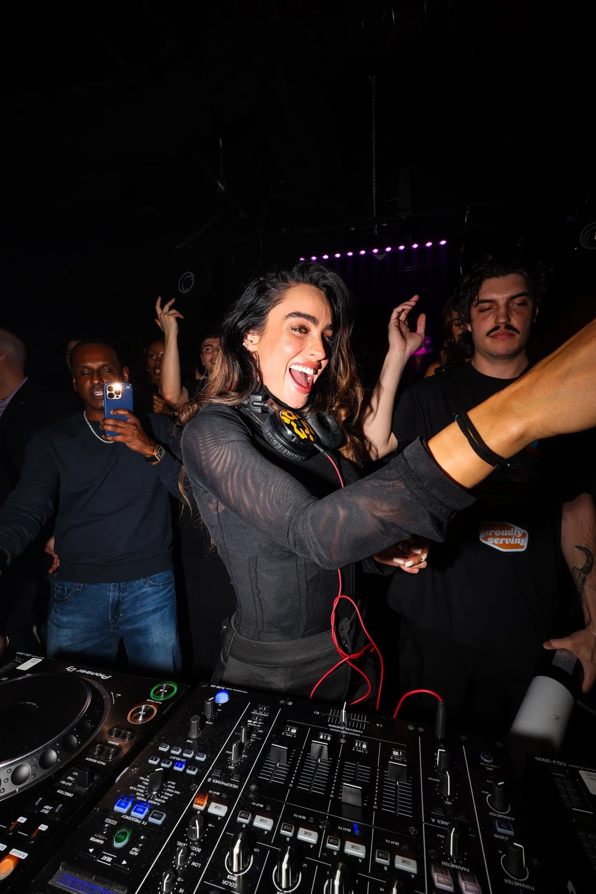
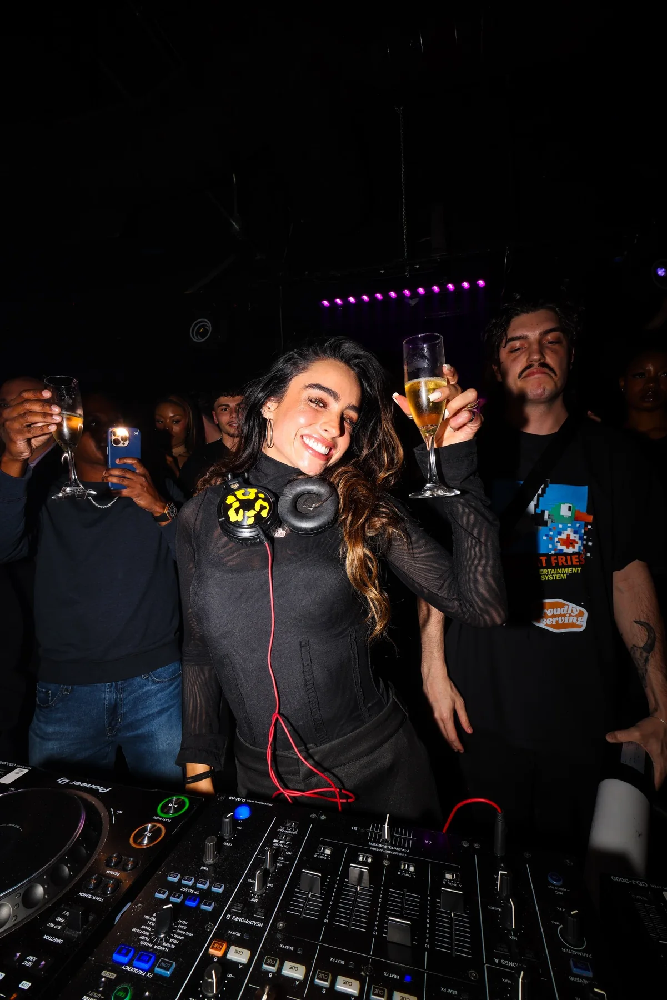
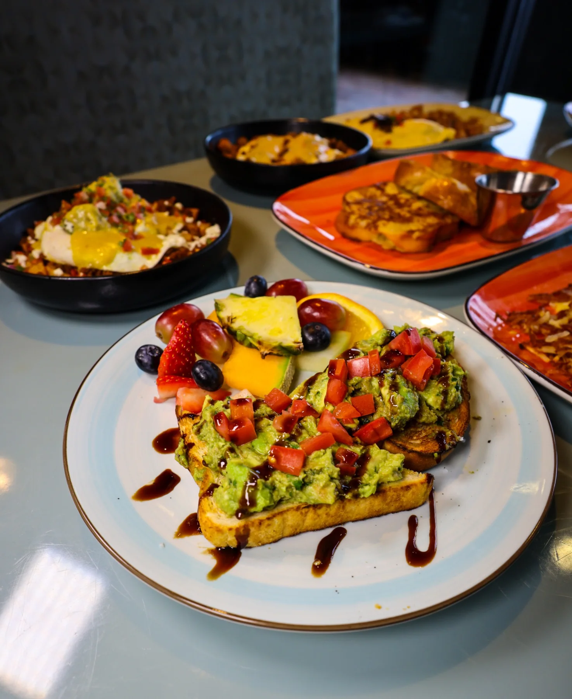
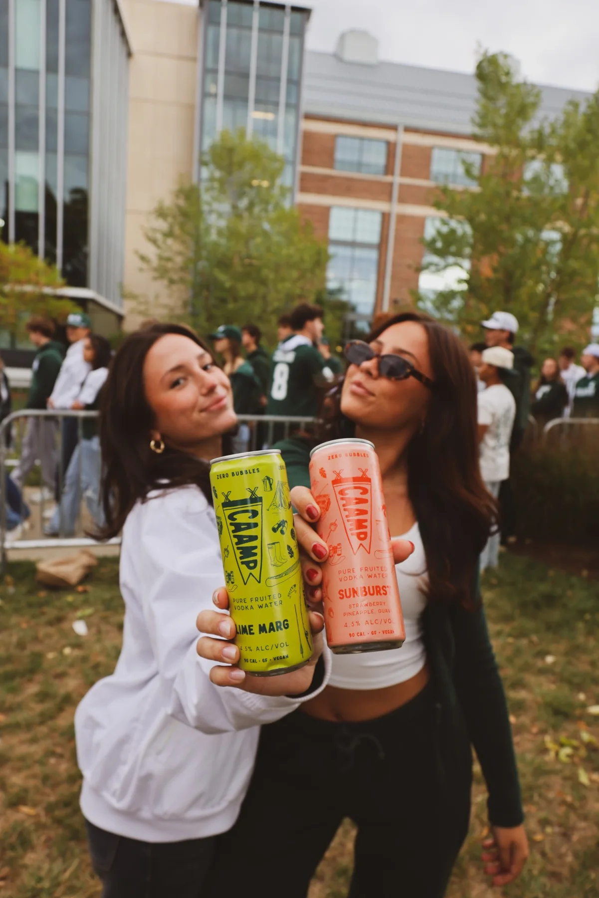
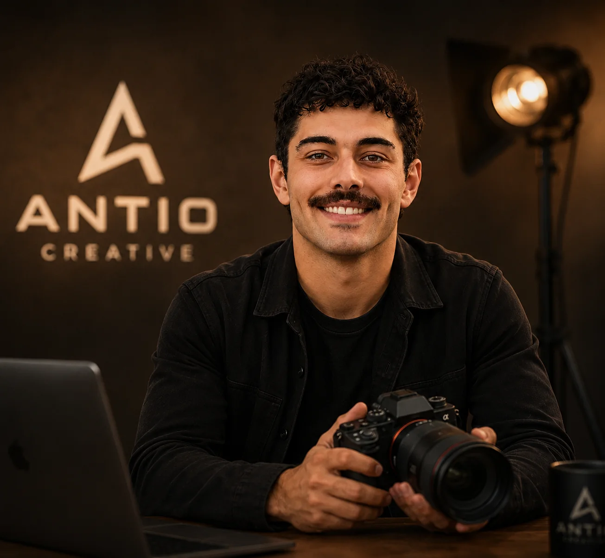

Nightlife · Concert photography

Michigan based · Available across the Midwest
Selected work across
Strong creative should do more than look good. Every image, post, website, and campaign should make the business clearer, more credible, and easier to choose.
A few recent projects
From food photography and lifestyle content to social media direction and live-event coverage, each project is shaped around what the client needs people to notice.

Restaurant photography · Website content

Social media · Creative direction

Lifestyle · Product content

Nightlife · Concert photography
Event photographs document live appearances. No endorsement or affiliation is implied.
Food, products, lifestyle, events, concerts, nightlife, brands, and short-form content.
Content planning, creative production, captions, posting, campaign direction, and ongoing management.
Responsive, easy-to-use websites with clear messaging, strong visuals, and a direct path to inquiry.
Creative direction, visual identity, campaign assets, launch content, and practical growth strategy.
Simple process
We identify the audience, the business outcome, and exactly what needs to be created.
The shoot, design, content, or site is built around the message—not around unnecessary extras.
You receive polished work that is ready to publish, promote, and build on.

About Antio Creative
Antio Creative started in college with a $250 camera, no formal training, and a determination to learn. Zachary Antaya taught himself photography, editing, design, websites, social media, and marketing—building every skill and opportunity from the ground up.
What began with local shoots grew into work for restaurants, consumer brands, and live events featuring nationally recognized talent. Today, Antio Creative brings that same self-taught drive to businesses that want stronger visuals, clearer messaging, and a brand people actually remember.
No shortcuts. Just years of learning, creating, and getting better with every project.
Let’s work together
Share what you are building, what you need, and what success should look like. You will hear back directly from Zachary.